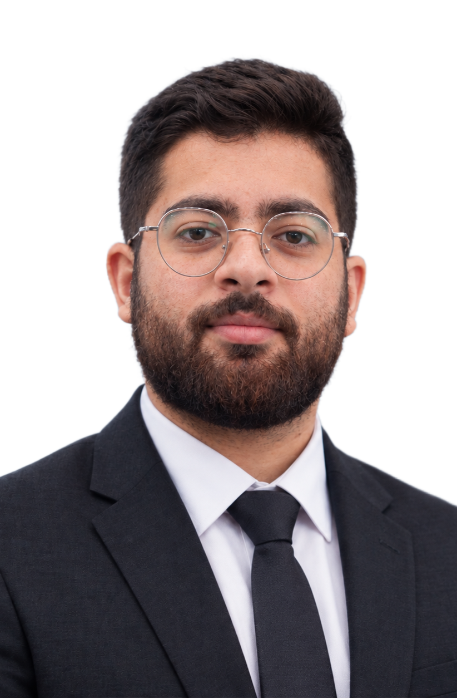
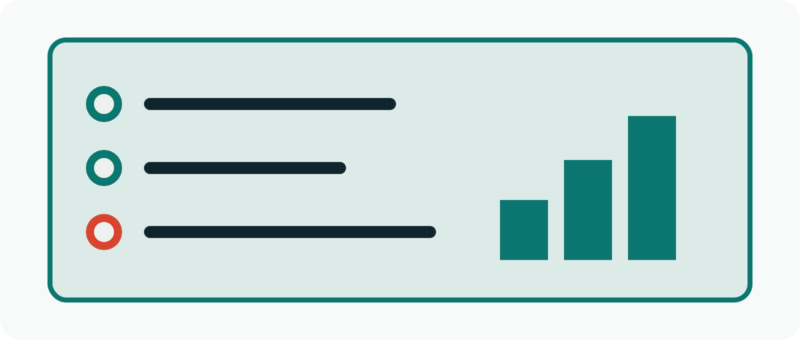
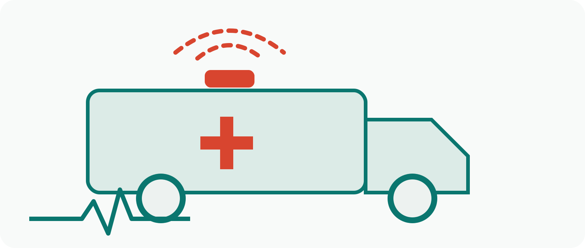
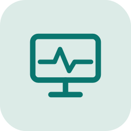
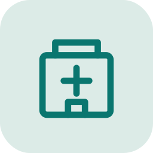
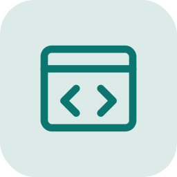
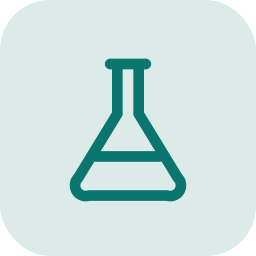
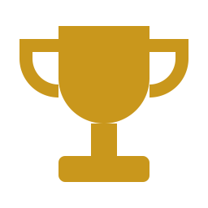
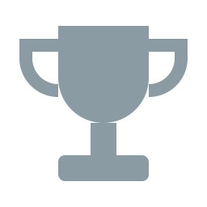
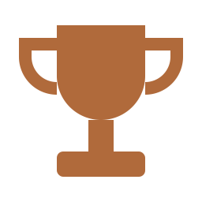

AIN Surgical
Graduation project, publishedA low-cost, high-fidelity clinical simulation framework that generates synthetic training data for surgical robotics.
Read the paper (IEEE, DOI)Biomedical Informatics Engineer
I connect clinical devices, hospital workflows, and data. My work spans medical equipment maintenance, simulation for surgical robotics, and software that makes biomedical systems easier to track and learn.

I am a Biomedical Engineering graduate from The Hashemite University with hands-on experience in clinical engineering, device calibration, and preventive maintenance.
Alongside the hospital work, I build software: simulators, a maintenance management tool, and synthetic data pipelines. I completed the Clinical Engineering Professional program at Al Hussein Technical University, covering clinical systems, medical device cybersecurity, and human error in device accidents.
I like problems where engineering, clinical safety, and data meet.
A low-cost, high-fidelity clinical simulation framework that generates synthetic training data for surgical robotics.
Read the paper (IEEE, DOI)
A computerized maintenance management tool for biomedical equipment, with real-time tracking of maintenance status.
An interactive virtual lab that simulates imaging modalities and equipment operation. It applies imaging physics and instrumentation principles to reproduce realistic acquisition workflows.

A prototype of a next-generation ambulance that integrates connected medical devices with emergency response workflows.





1st placeProjects CompetitionEMBS National Day 2025, IEEE EMBS Jordan Chapter

2nd place10X Project CompetitionFaculty of Medicine, The Hashemite University, Oct 2025

3rd placeFuture Health Impact Hackathon 2025King Hussein Cancer Foundation and Center
Falling Walls Lab JordanFalling Walls Lab Foundation, Jul 2023
Health Tech Hustle, Technical PathIEEE HU EMBS Student Chapter, Mar 2023